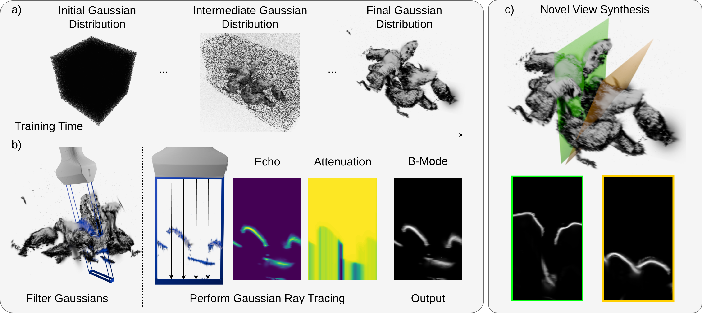
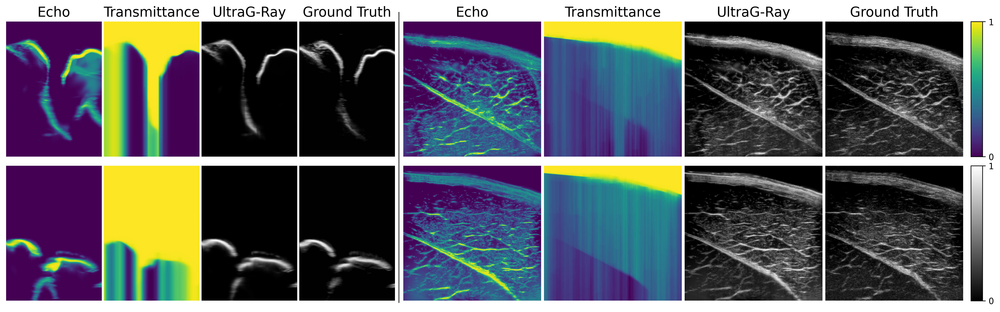
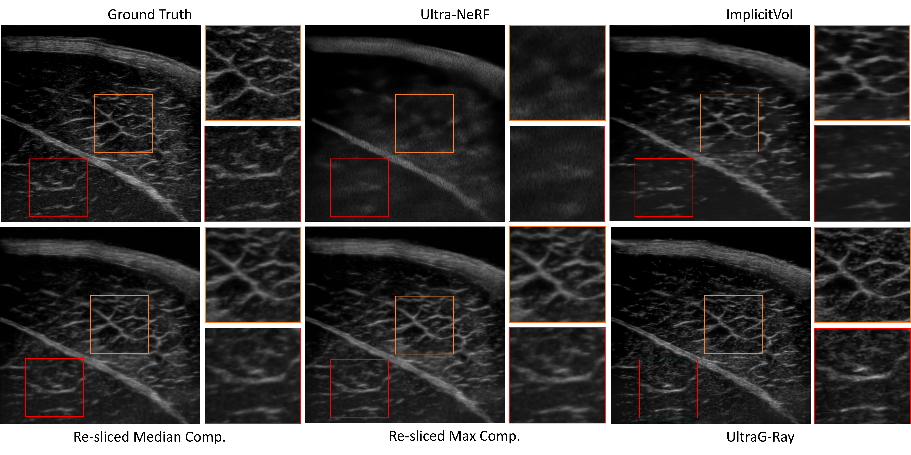

UltraG-Ray: Physics-Based Gaussian Ray Casting for Novel Ultrasound View Synthesis
Felix Dülmer, Jakob Klaushofer, Magdalena Wysocki, Nassir Navab, Mohammad Farid Azampour
MIDL 2026 (Accepted)
Abstract
Novel view synthesis (NVS) in ultrasound has gained attention as a technique for generating anatomically plausible views beyond acquired frames, offering new capabilities for clinician training and data augmentation. However, existing methods struggle with complex tissue and view-dependent acoustic effects. Physics-based NVS addresses these limitations by integrating ultrasound image formation into simulation, but a substantial realism gap remains. In this work, we introduce UltraG-Ray, a novel ultrasound scene representation based on a learnable 3D Gaussian field coupled with an efficient physics-based module for B-mode synthesis. We explicitly encode ultrasound-specific parameters, including attenuation and reflection, into a Gaussian-based spatial representation and perform image synthesis with a ray-casting scheme. Compared to prior approaches, UltraG-Ray naturally captures view-dependent attenuation effects, enabling physically informed B-mode generation with increased realism. Across benchmarks, we observe consistent improvements in image quality metrics, including up to 15% gain in MS-SSIM.
Overview
Key figures from UltraG-Ray are shown below.
Pipeline overview
The pipeline shows progressive adaptation of the learnable 3D Gaussian distribution, followed by pose-based Gaussian filtering, Gaussian ray-intersection for echo and transmittance maps, and final B-mode image synthesis for novel-view generation.
{kind=link}

Echo and transmittance modeling
This figure illustrates attenuation and intensity formation: transmittance accumulation along rays, pixel-wise echo contributions from view-dependent Gaussian intensity, and final intensity composition with attenuation.
{kind=link}

Qualitative comparison
On ex-vivo porcine muscle data, UltraG-Ray produces higher-fidelity reconstructions with clearer muscle fiber structures and improved contrast compared to prior approaches.
{kind=link}

Citation
If you find this work useful, please cite:
@inproceedings{duelmer2026ultragray,
title={UltraG-Ray: Physics-Based Gaussian Ray Casting for Novel Ultrasound View Synthesis},
author={Duelmer, Felix and Klaushofer, Jakob and Wysocki, Magdalena and Navab, Nassir and Azampour, Mohammad Farid},
booktitle={Medical Imaging with Deep Learning (MIDL)},
year={2026}
}